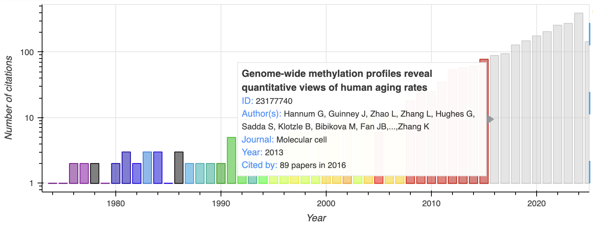

PubTrends
PubTrends is an exploratory tool for researchers providing faster trends analysis
and breakthrough papers
discovery among the steadily growing flow of papers worldwide. The service aims to solve three tasks: give a
brief overview of the field, explore popular trends in publications, and help to find new promising
directions.
Contents
- Datasets section described publications datasets
- Workflow section describes general analysis workflow
- Example section contains a detailed description of analysis results
- Papers section contains summary overview of analyzed papers
- Trends section shows most cited papers per year
- Network section describes networks of citations and similarity
- Topics section contains detailed information about all the papers for each topic
- Review section describes automatic review generation for scientific papers
- Other section contains other analyses
- Paper about PubTrends
- Feedback We'd love to hear your feedback to make the service better together
Datasets
PubTrends contains 30 mln papers and 175 mln citations of biomedical literature from the
PubMed® database with 170 mln papers and 600 mln citations
from the Semantic Scholar archive. Semantic Scholar
aggregates significant journals and publishers, including Springer Nature, ACM, etc.
Workflow

Main page
PubTrends main page is the start point for papers analysis, several analysis options are supported.
-
Search
The service looks for papers matching the search query. Only papers containing search query in titles or abstracts are found.
The user can use double quotes to search for exact phrase or find documents, which contain all the words in the query. The number of papers can be quite significant, so it's natural to use some ranking and filtering to focus on either most cited, or most recent articles.
This set of papers is further extended by reference to papers which are similar, but may not contain some search words.
When working with PubMed database the user can use PubMed search syntax for the search query, in this case the service will use PubMed API to fetch list of papers for analysis. PubMed advanced search syntax allows searching in exact fields, limit publications by date and much more. -
Paper
When user is interested in the particular paper, PubTrends can help user to find similar papers and most important prior and derivative works. The user can use title name of DOI for paper identification. The service will search for paper, analyze connected papers and proceed one step further by references to find out which of the connected papers have co-citations, common references, etc. When the set of papers is collected, papers similarity is analyzed.
All the analysis is based on similarity between papers. Similarity is computed based on Bibliometrics features,
i.e. bibliographic coupling (number of common references in a pair of papers), co-citations
(when a pair of papers are cited together), direct citations, and text similarity between papers.
This information is used to create papers citations graph.
Citations graph is later used to compute papers graph embeddings. Texts of titles and abstracts are used to
compute papers text embeddings. Combined graph and text embeddings they are used for papers similarity analysis
and topics identification by clustering.
Finally, the user gets full report covering all the aspects of analysis.
Learn more exploring one of precomputed search queries from the PubTrends main page.
Example
Here we describe the analysis for the predefined search query "human aging".
We focus on 1000 most cited papers from the PubMed, with review papers, extending search set with connected
papers by 20%.
The main report page contains all the analytics and consists of several parts: Papers, Trends, Network, Topics, Review and Other.
Side bar on the left of the page can be used for navigation. Please use About button for the help.
Papers
The Papers section demonstrates a birds-eye view of the field, including the total number of articles,
and extracted topics. Word cloud shows the most frequent words in titles and abstracts. Also, it
contains a summary plot of papers per year. Please note that the word cloud component is clickable, and
you can navigate to the documents containing the selected word. Papers can be viewed as a plain list, as
well.
Topics were computed by hierarchical clustering of papers embeddings based on text and graph embeddings.

Topics by year plot shows dissection of papers by topics and the number of papers for each topic by year.
Each topic is described by main keywords and total papers share.
Trends
The Trends section contains an interactive visualisation of top-cited papers, organised by number and
citations count. Different types of articles are shown in different colours.
Most cited papers and papers with the quickest growth of citations are also shown here. All the papers are
clickable, and we can explore details on a separate page.
Also the user can explore frequent keywords trends mentioned in papers.
Top Cited papers plot are shown in the plot, where user can see most important papers publication year, total
number of citations and additional information about the paper on mouse hover.

Hot papers plot shows papers with the biggest number of citations by year. 
Keywords frequency plot shows most frequent terms mentioned in papers and evolution in time.
Exact number of papers containing keyword is available on hover.

Network
Topics are closely related groups of documents. Aggregated graph and text embeddings are used to find similar
papers and detect topics.
Overall structure of topics within a research field can be visualised as a papers similarity graph.
The graph behind shows the overall structure of the research field, hovered dedicated graph explorer can do much better. It supports papers coloring by year or by topic, provides reach capabilities for search and filtering in papers meta-information available. On the screenshot you can see papers coloured by different topics and the paper is highlighted with its connected papers.

Topics
Topics and identified using hierarchical clustering of papers embeddings, the user can explore topics hierarchy dendrogram in the dedicated plot.

For each topic, the application shows familiar to users word cloud and articles plot. Word cloud is built from
terms specific to the given topic with respect to others. The more important word is the more significant
fraction of papers contains it.
The topic below is dedicated to molecular makers of human aging including DNA methylation changes and telomeres
shortening related with human aging.

Review
Generate a review for the chosen topic - a set of sentences from top cited papers with the highest probability to be included in a real review paper.

Review generation mechanism is described in the Open Access Paper: https://arxiv.org/abs/2010.04147
Citation: Nikiforovskaya, A., Kapralov, N., Vlasova, A., Shpynov, O. and Shpilman, A., 2020, December.
Automatic generation of reviews of scientific papers. In 2020 19th IEEE International Conference on Machine
Learning and Applications (ICMLA) (pp. 314-319). IEEE.
Other
Sections Authors and Journals shows the most productive authors and the popular journals in the analyzed set of papers.
Section Numbers allows for quick identification of numbers hidden in the set of papers.
The service scans papers for quantitative features mentioned in titles or abstracts and presents the user table
with search capabilities.
Topics evolution analysis in an experimental feature, when topics identification is performed longitudinally at
several time points to detect merges and splits of topics.
The user can inspect evolution of the topics.
Paper
Open Access Paper: https://doi.org/10.1145/3459930.3469501
Poster is available here.
Citation: Shpynov, O. and Nikolai, K., 2021, August. PubTrends: a scientific literature explorer. In
Proceedings of the 12th ACM Conference on Bioinformatics, Computational Biology, and Health Informatics (pp.
1-1).
Feedback
We'd love to hear your feedback! It allows us to make the service better together.
Feel free to fill the feedback form on the bottom of reports page or use emotions buttons to
share your thoughts.
Also you can optionally leave your email to contact you later.
This is an open-source project, you can explore the code or submit your issues directly to the GitHub at https://github.com/JetBrains-Research/PubTrends.
Thank you for using PubTrends!